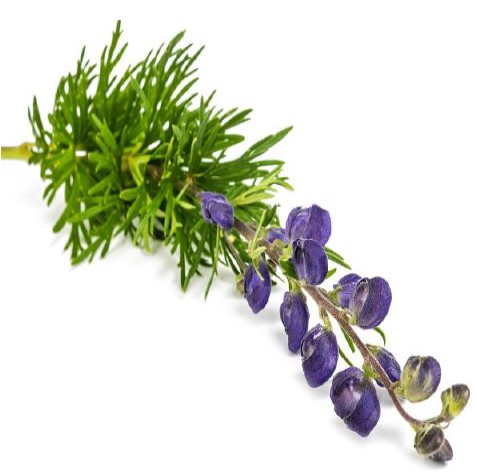
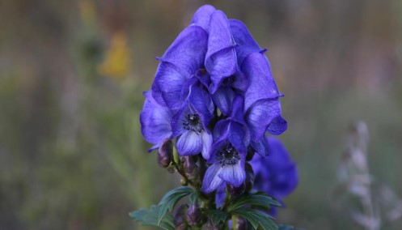
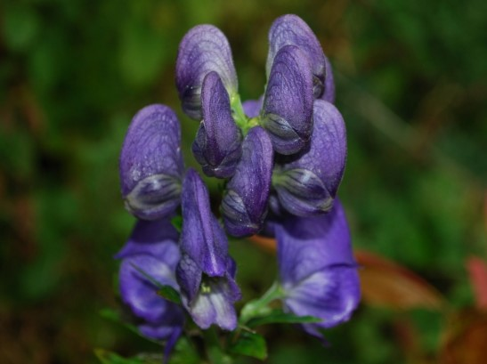
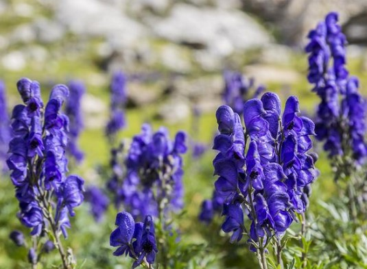

PHOTOS:




Botanical Name: Aconitum ferox
Common name: Meetha Vish
Aconitum ferox thrives in the mountainous regions of the Himalayas, particularly in Nepal, India, and Bhutan. It prefers high-altitude areas with cool, moist conditions, often growing in meadows and open forests. Aconitum ferox is cultivated by sowing seeds in well-drained, fertile soil in a cool, shaded environment. It requires a high-altitude setting and regular watering. Plants should be spaced to accommodate their size and provide good air circulation. Aconitum ferox is utilized in traditional medicine for its potent analgesic and anti-inflammatory effects. It is commonly used to treat a variety of conditions, including fever, where it helps reduce elevated body temperatures, and rheumatic pain, providing relief from joint and muscle discomfort. Additionally, it is employed to alleviate neuralgia, or nerve pain, and to manage respiratory issues such as coughs and bronchitis. Given its strength, it is essential to consult a healthcare professional before using Aconitum ferox.